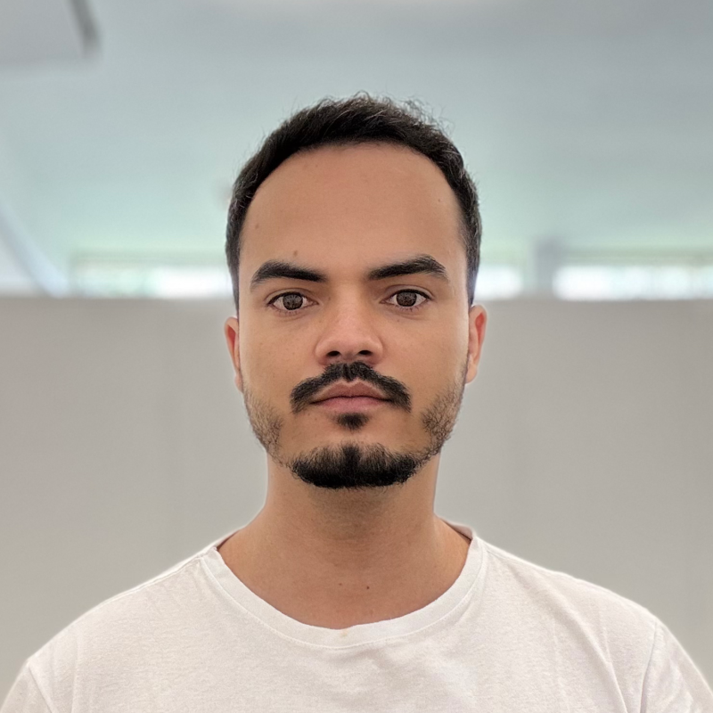

Sobre Mim

Floriatan Dos Santos Costa
Pesquisador de Pós-Doutorado em Química Analítica
Sou um pesquisador dedicado a expandir os limites da química analítica através da integração de novas tecnologias. Atualmente vinculado ao Departamento de Química da Universidade Federal do Paraná (UFPR) e realizando um estágio de pesquisa estendido na Universidad de Zaragoza, Espanha.
Minha atuação foca no desenvolvimento de sistemas de micro-dispensação, manipulando volumes de picolitros a nanolitros para análises por ablação a laser e sp-ICP-MS. Além da espectrometria, aplico modelos quimiométricos, métricas de química verde e utilizo a fabricação digital (impressão 3D) para prototipagem de instrumentação de hardware laboratorial.
🔬 Competências Científicas
💻 Competências Tecnológicas
Trajetória
Pesquisador Visitante
Universidad de Zaragoza, Espanha
Estágio estendido focado em pesquisa e desenvolvimento analítico, consolidando redes de colaboração internacional e processos instrumentais.
Pesquisador de Pós-Doutorado
Universidade Federal do Paraná (UFPR), Brasil
Pesquisa em química analítica com ênfase no fracionamento de gotas em escala micro/nano, testes de tensão superficial e análise de elementos traço.